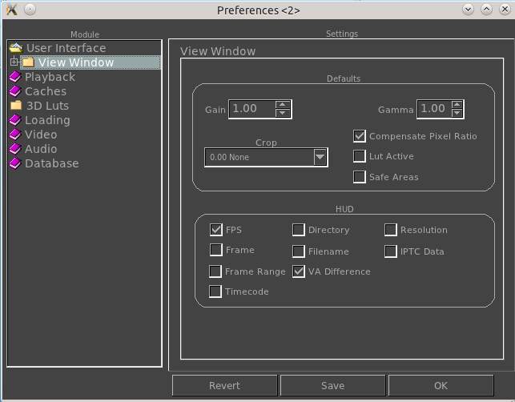

|  |
Here you can change the default gain and gamma when the viewer starts. Here you can set the default crop region when the viewer starts. This option which is on by default, shows only the display window of images such as OpenEXR. Turning it off will show the data window instead. For most images both are the same, but OpenEXR makes a distinction between both. Here you can activate the default pixel ratio button when the viewer starts. Here you can activate the default 3D Lut button when the viewer starts. Here you can activate the display of safe areas by default when the viewer begins. Here you can set which element of the internal viewer state gets displayed in the HUD (Head Up Display). |